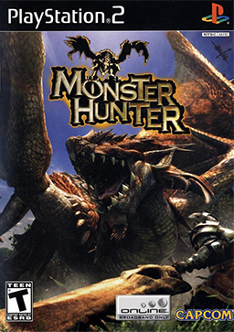
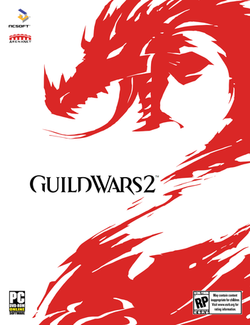

i have had a passion for video games since i was a little boy playing Duck Hunt on the first Nintendo system. Since then i've always been looking for great games to play and explore. i always strive to learn as much as i can about each world and how everything works in them. Here are some of my favorite games i've played over the years.

Monster Hunter
Monster Hunter is one of my all-time favorite games. While it never gained much popularity in the u.S it was highly popular in Japan and quickly became of their top games. You start as a lowly hunter and slay monsters and dragons to build armor and weapons. You can play solo or go online and form teams of 4 to hunt together. i played a lot of this game with my friends and we had a great time hunting and exploring together.
Dark Souls
Dark Souls is one of the hardest games i’ve ever played. it is an RPG with no forgiveness and even the slightest mistakes could kill you. When i first started playing Dark Souls i would die every 10 minutes at least, sending me back to base and losing all of my currency i had just acquired. But the challenge is what made it so refreshing and great compared to most games today. After spending a lot of time with the game you do learn how everything acts and can surprisingly make it through most of the game without dying. i’ve tried soloing it offline without dying a few times but one spot, the chaos bed, always stops me.
Skyrim
Like Dark Souls, Skyrim is another great RPG game but is much easier. But although not as challenging it does have different play styles that i’ve come to love and is more story based. in Skyrim you are free to do as you please and adventure wherever you want. it has a huge map to explore and hundreds of NPC’s to talk to. Whether you want to become a great hero and fight in the civil war or just wander the lands and explore you can play Skyrim how you see fit.

Guild Wars 2
Guild Wars 2 is a somewhat new MMo-RPG (Massively Multiplayer online Role Playing Game) that i really enjoyed but have taken a break from. it is a fantastic MMo that does a great job handling player interaction in the game and sets a mindset where everyone helps each other to succeed rather than fighting over resources. The social aspect of the game is one of the greatest aspects about it and like Skyrim it has a lot of explorable content but in GW2 you can do it with your friends. You also have a great deal of customization when it comes to your characters and can look and play how you want.
Final Fantasy x
Final Fantasy x is the first Final Fantasy game i ever played and is still the best one i’ve played. Final Fantasy games are turn based RPGs typically with great, uniquely crafted stories to them. The story in FFx blew me away the first time and i really enjoyed the leveling system as i had never seen anything like it. it involved a single “sphere grid” that every character used and because of this you could somewhat customize each characters skills by moving them to someone else’s spot on that grid . And even though it was mostly a linear game you eventually were able to explore and find a few secrets hidden in the game. Although i’ve played FFx many times i would still play it again just for the story.
zelda
The Legend of zelda series is another set of great games i was introduced to during my childhood. They can be described as adventure/puzzle games with great lands to explore and puzzle dungeons to solve. They require you to think and also to act fast when the fight comes to you. Throughout the games you acquire many useful tools to help you solve puzzles as well as to unlock new areas to explore. The stories in each game are different but stick to a very similar format with the hero trying to save the land from evil while also searching for the triforce and master sword. i’ve enjoyed every zelda game i’ve played but the one that i spent the most time on is The Wind Waker. it is different from other zelda games as you get around primarily by boat and i loved sailing the seas and exploring different islands.
Star Wars: The old Republic
i love everything Star Wars. When i heard that a Star Wars MMoRPG was in the works i was very excited and followed its development closely for about a year and a half. When it finally came out i was playing it the very night it was released with thousands of other eager Star Wars fans. it was great and i dove right into it to explore the galaxy with my friends. But there were a lot of problems with the game and i believe it shouldn’t have been released as early as it was. There were a few bugs but the biggest one i remember was the memory leak present on one planet that would literally freeze your computer up, thus locking your characters stuck on the planet and unplayable. it was also very demanding for my computer and it often lead to it overheating. Eventually my graphics card fried a little and now most computer games i play have terrible screen tears that obstruct much of the screen. i still remember SWTOR fondly but it has had a rough life and i won’t be going back even though it is free to play now.
Honerable Mentions
i've probably played hundreds of games throughout my life and while i have my favorites there are plenty of other great games that i also enjoyed. Here are the honerable mentions.
- World of Warcraft: vanilla-Wrath of the Lich King
- Assassin’s Creed 1 and 2
- Mario Kart
- Super Smash Bro's
- Red Dead Redemption
- Fable
- oblivion
- Warcraft 3
- Pokemon Games
- Need for Speed underground
- Super Mario RPG: Legend of the Seven Stars
- Conker's Bad Fur Day
- Rock Band
- And many more!